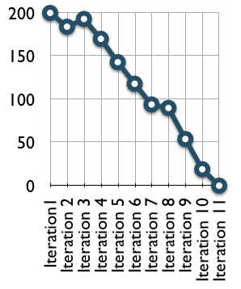

On a Scrum project, the team tracks its progress against a release plan by updating a release burndown chart at the end
of each sprint. The horizontal axis of the release burndown chart shows the sprints; the vertical axis shows the amount
of work remaining at the start of each sprint. Work remaining can be shown in whatever unit the team prefers--story
points, ideal days, team days, and so on.

On this burndown chart, the team started a project that was planned to be eleven two-week sprints. They began with 200
story points of work. The first sprint went well and from the chart you can infer that they had around 180 story points
of work remaining after the first sprint. During the second sprint, however, the estimated work remaining actually
burned up. This could have been because work was added to the project or because the team changed some estimates of the
remaining work. From there the project continued well. Progress slowed during sprint 7 but then quickly resumed.
This type of release burndown chart works very well in many situations and in many teams. However, on projects with
lots of changing requirements you may want to look at an Alternative Release Burndown Chart.
|